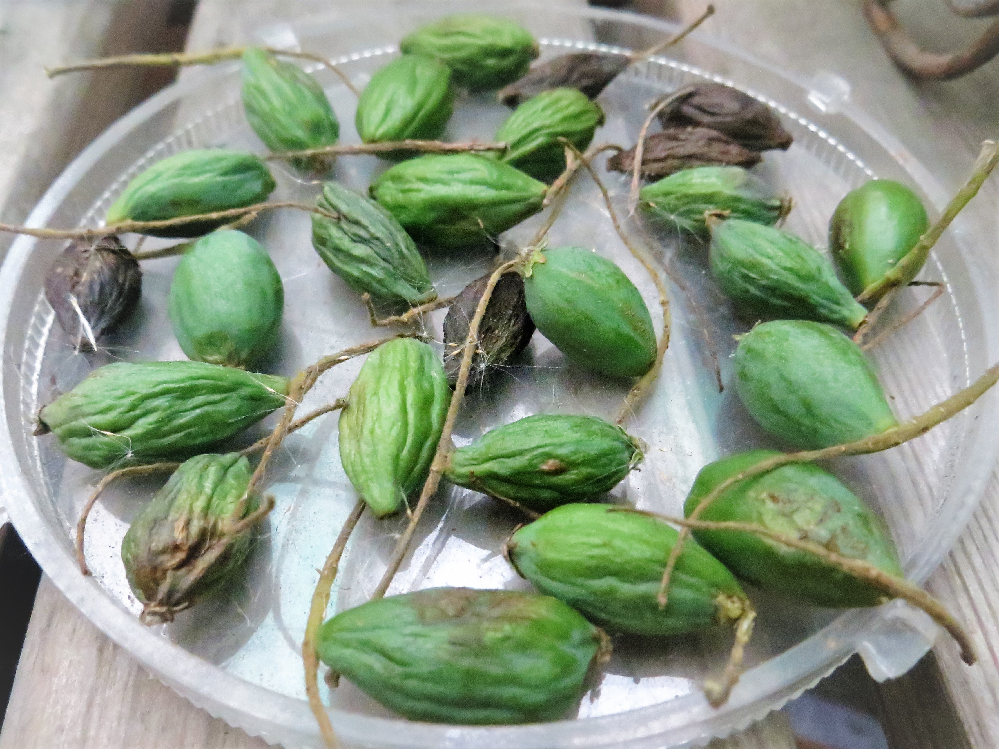
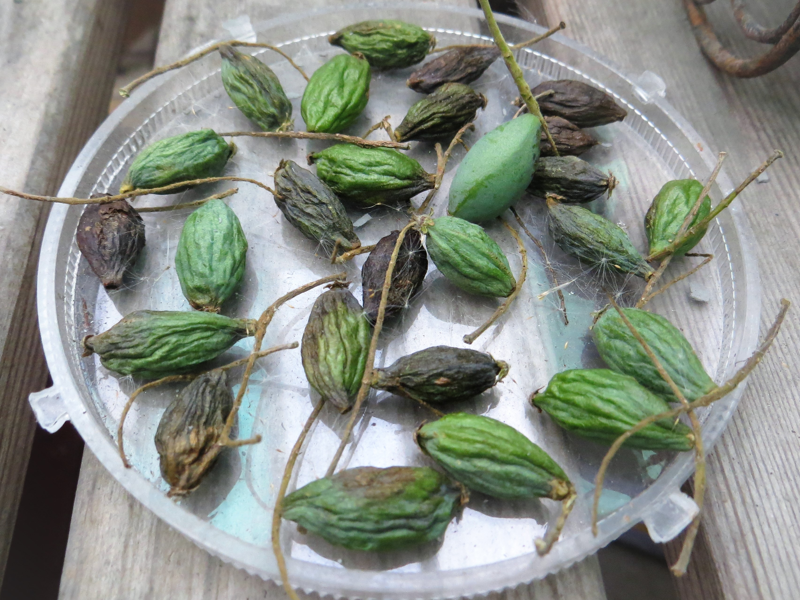
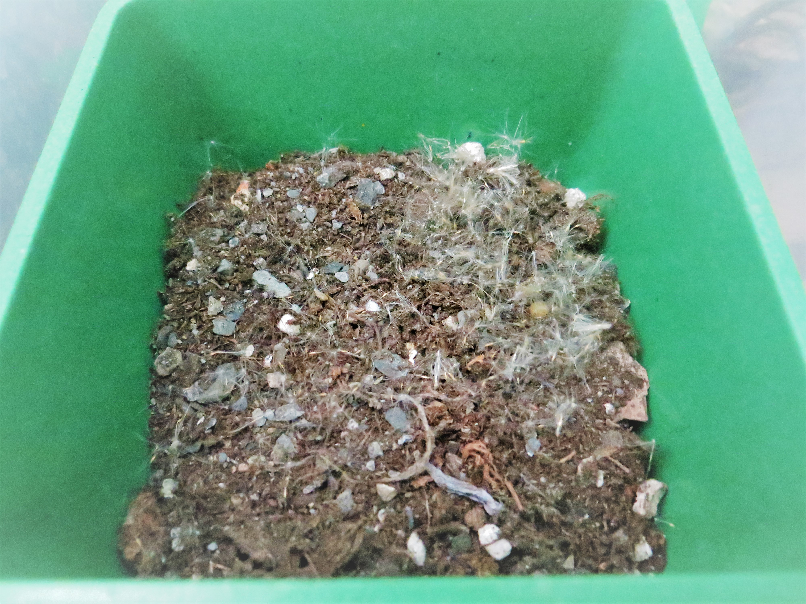

小葉欖仁
端午節三天的連假，6:30分起床用完早餐後，最適合去外頭曬曬太陽、和最近種的多肉們一起行光合作用，並給自家植物們喝早起的第一杯水。正值家們口的小葉欖仁樹開花結果的時節，地面上掉了一顆顆形似小橄欖的小葉欖仁樹種子，不管是綠又飽滿剛掉下來的或是黑又乾扁已掉下許久的通通撿起來，放著曬乾日後備用。
▲ 小葉欖仁的種子們
端午連假第二天看看種子們怎麼樣了，沒想到才過一天就這麼老了，全部變得有如老人般皺巴巴的。終於可以從中挑選一顆看起來最老、最乾扁的種子，在培養土中挖一個洞種進去，給一些水分期盼它長出新芽。
▲ 小葉欖仁的種子們 DAY2
▲ 小葉欖仁的家